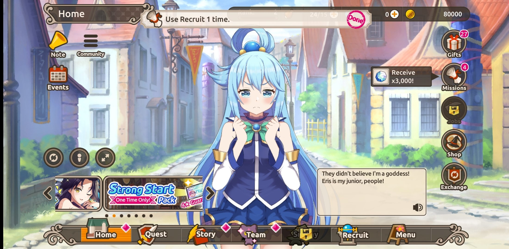

|
Lo primero antes de nada seria lo mas indicado familiarizarse con cada parte de los menus: El menú de inicio, aquí tienes en la parte superior izquierda los avisos, ver recompensas, pestaña de comunidad. debajo de eso, puede cambiar qué carácter se representa aquí, así como eliminar la interfaz de usuario. debajo de esas opciones está el control deslizante de noticias. En la parte superior derecha tiene el rango de su cuenta, luego la resistencia, luego la cantidad de cuarzo (moneda de extracción) y finalmente el oro. cuando subes de rango, aumenta tu límite de resistencia y lo actualiza. debajo tiene la caja de regalo: las recompensas de check-in y otras cosas promocionales terminan allí. misiones, que tienen repeticiones diarias, así como misiones de eventos especiales. |
||||
Los trabajos son lugares donde asignas personajes para producir cosas con el tiempo. hay tres puestos de trabajo y la importancia de la asignación de personajes es solo que los personajes ganan afinidad, aún puedes llevarlos a la batalla. luego tenemos la tienda, donde puedes comprar paquetes de cuarzo o recuperar energía de forma paga. y finalmente intercambio, que enumera todos los intercambios disponibles actualmente. |
 | ||